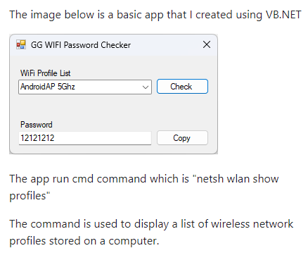
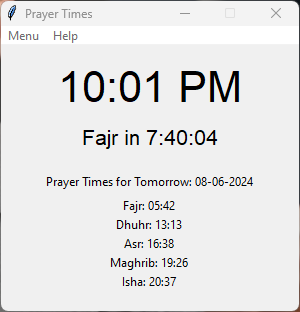
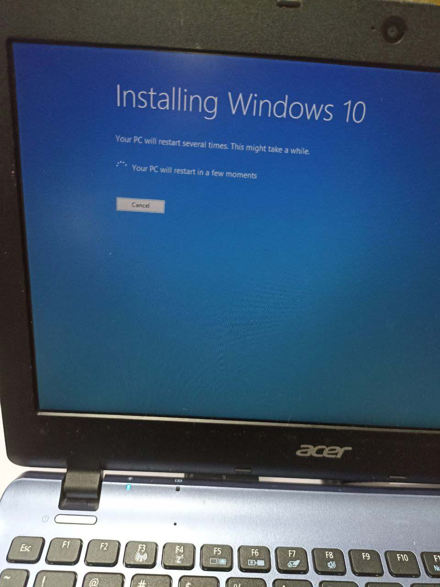

HTML, CSS, JavaScript & PHP
Basic
Level 2 out of 5

Hello, I'm
Graduate with a Diploma in Information Technology


Get To Know More

Computer Technician (5 months)

DIPLOMA IT CGPA 3.84 (JAN2024)
MUET BAND 3 (2018)
Hi, I'm Azizi Yahya,
a technology enthusiast with a diploma in Information Technology from Politechnic Besut, Terengganu.
My expertise spans across various domains including software engineering, web development, and networking.
I am passionate about using technology to innovate and improve business processes.
Explore My
Basic
Level 2 out of 5
Beginner
Level 1 out of 5
Beginner
Level 1 out of 5
Basic
Level 2 out of 5
Beginner
Level 1 out of 5
Intermediate
Level 4 out of 5
Beginner
Level 1 out of 5
Basic
Level 2 out of 5
Basic
Level 2 out of 5
Showcasing My
The Wifi Key Viewer is a Windows application developed in Visual Basic that allows users to view saved Wi-Fi passwords on their system. It offers a user-friendly interface for retrieving and displaying passwords stored
The GPA Calculator is a command-line application developed in C++ that helps students calculate their Grade Point Average (GPA) based on their course grades. It provides an accurate GPA calculation.

gForm Prefilled is an Android application built using Android Studio that automates the process of filling out Google Forms. It saves time and effort by pre-filling forms with user-specific information.

The Prayer Time Clock is a Python application that calculates and displays prayer times for users based on their geographic location. It provides reminders and notifications for prayer times throughout the day.
Demonstrating My
Diagnosing and repairing a malfunctioning screen on a laptop. The project required identifying the issue, sourcing replacement parts, and performing the repair.

Cleaning and maintaining the cooling system of computers and laptops. It focused on removing dust and debris from cooling fans and heatsinks to improve system performance and prevent overheating.

The Hard Disk project involved diagnosing and repairing issues related to hard disk drives (HDDs). This included data recovery, replacement of faulty drives, and performance optimization.

This project focused on formatting and reinstalling Windows on computers. It included backing up user data, performing a clean installation of the operating system, and reinstalling necessary drivers and software.
The Battery project involved diagnosing and replacing faulty batteries in laptops and other portable devices. It included testing battery health, replacing defective batteries, and ensuring proper charging functionality.

This project involved troubleshooting and repairing printer issues, including paper jams, connectivity problems, and print quality issues. It included cleaning and maintaining printers to ensure optimal performance.

The Software project involved installing, configuring, and troubleshooting various software applications, including office suites and productivity tools. It focused on ensuring proper functionality and addressing any software-related issues.

This project involved providing a range of IT services, including system diagnostics, repair, and support. It included working with clients to address technical issues and provide effective solutions.

Get in Touch